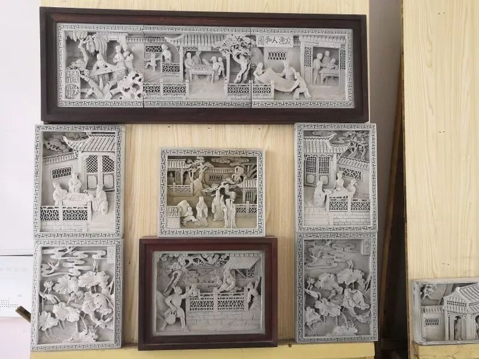
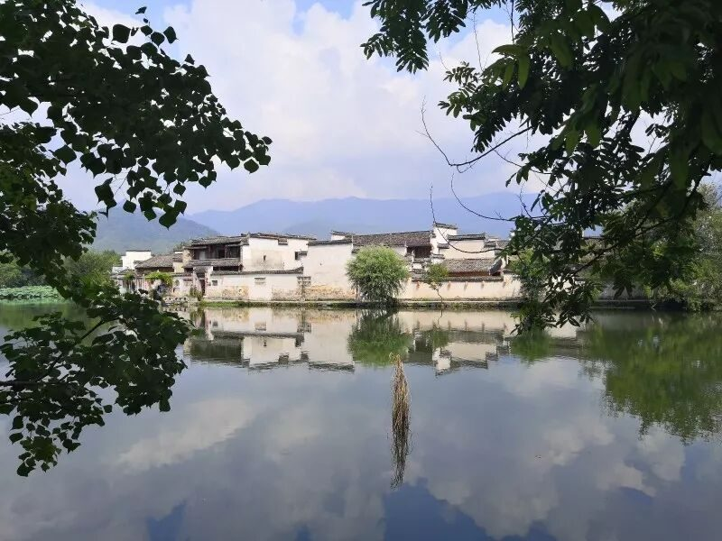

【素笺寄情·六】非遗世无双 梦回徽州情

行程伊始，我与大家坐上这绿皮火车，虽旅途不及家中舒适，但胜在可与行者无疆的朋友们谈天说地，论那巧夺天工的非物质文化遗产。
非遗世无双 梦回徽州情
非物质文化遗产给我的最初印象便是纪录片中，面临着后继无人的孤苦手工匠人。但那些都只是存在于脑海之中，并未临近接触过。而此行去徽州，给予我无尽感触的，正是三位朴实无华的老师。在砖雕厂，原以为被称为大国工匠的人都是拥有绝技，会恃才傲物，不会对我们这些涉世未深的大学生有好脸色。但是当我们见到方新中老师时，老师不仅热情好客，还担心我们是否每个人都有椅子，都有茶水喝。方老师几十年如一日地镌刻着栩栩如生的砖雕，而当我们蹲下身子，仔细去看每一处砖雕细节时，每一处都处理得及其巧妙。观看到老师手绘的精细图纸，详听每一幅画的暗含寓意，不觉心生仰慕不已。
徽州的村庄更是古色古香。宏村成为旅游景点，人们接踵而至，导游拿着喇叭到处查人，本被扰了兴致。但踏入宏村内，景色却惊为天人，朝飞暮卷，云霞翠轩，雨丝风片，烟波画船。我们沿着小桥过了河想跟着导游了解这里的文化，却不曾想被农户摆在外面的鸭腿吸引了注意力。紫薯包，灌汤小笼包，鸭腿接连上桌，吃得甚是开心。借着这个机会，我们采访了店主。店主是当地居民，她告诉我们这里的水原本十分清澈，做菜洗衣都可以用。现在来的人多了，有写生的学生把颜料水倒入河中，外来的商家开店用河水涮拖布等等不文明的行为，带来了很多污染。但同时这里变成景点也有好处，大家对这里的关注多了，政府投资修缮老建筑，改善当地居民的生活，并带来了巨大的经济效益。


图片｜沈华，盛暘
文案｜应雨珊
排版｜邓子孚
审核｜应雨珊，潘雯雯
长按二维码关注我们